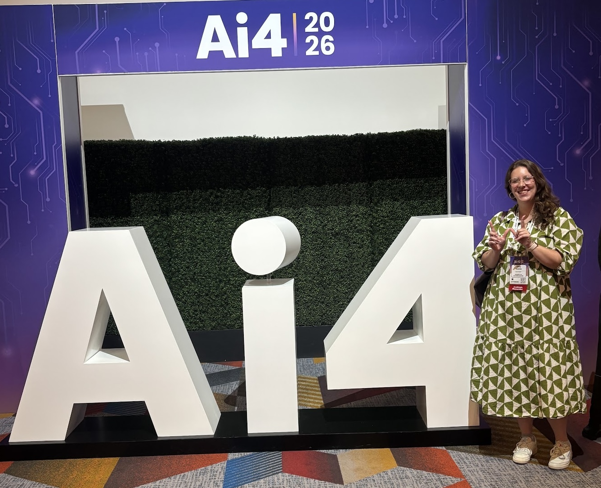
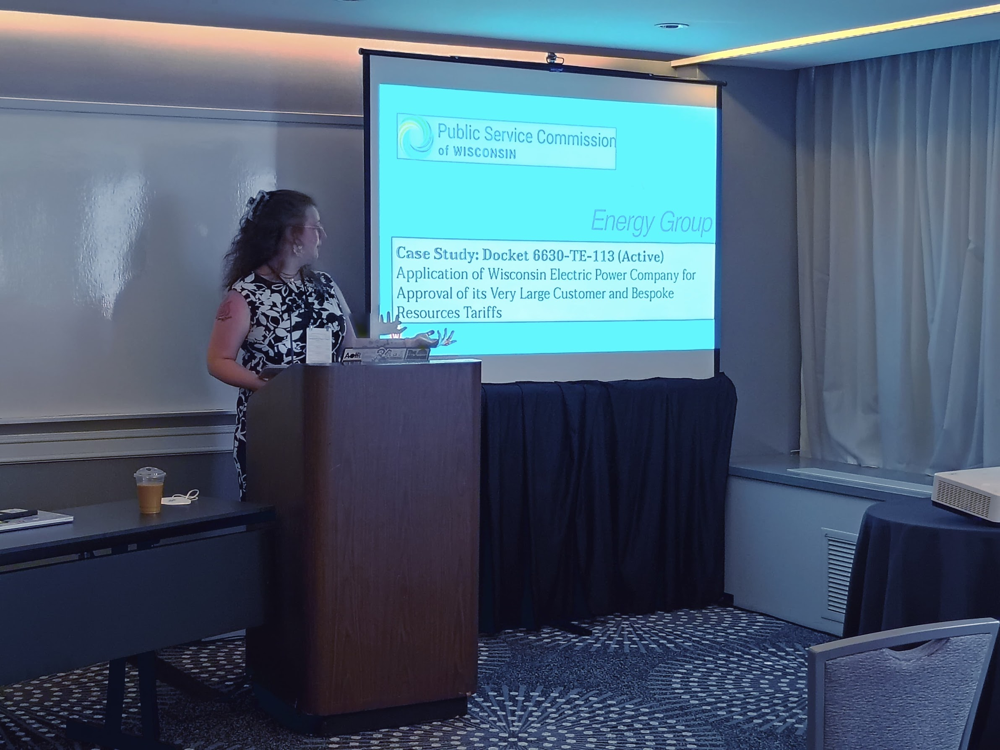
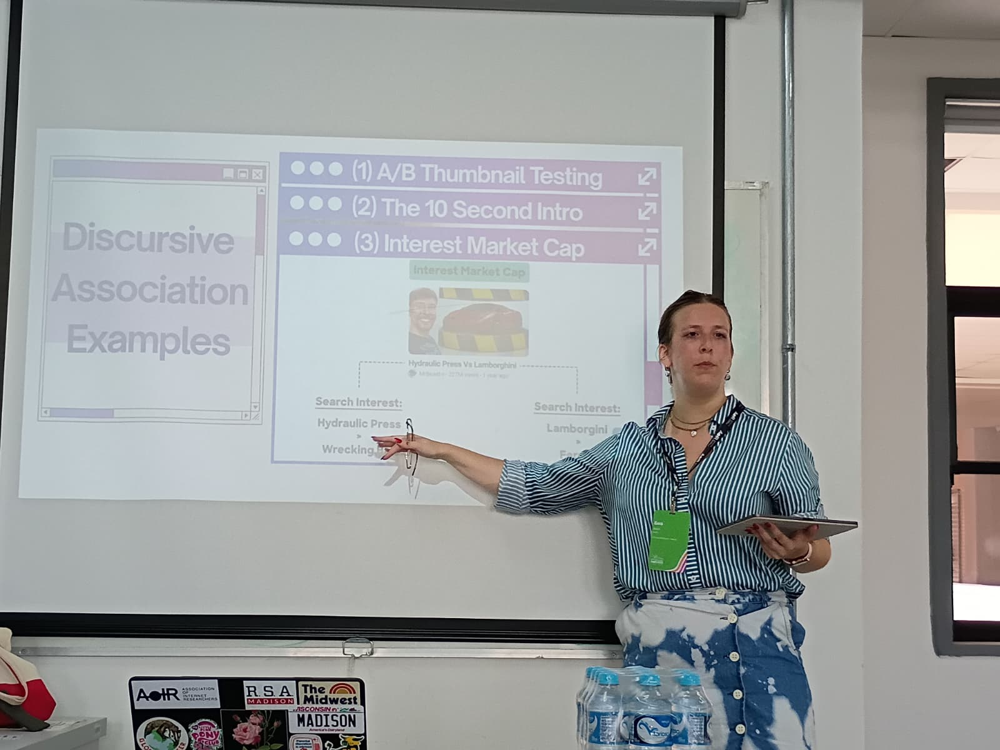
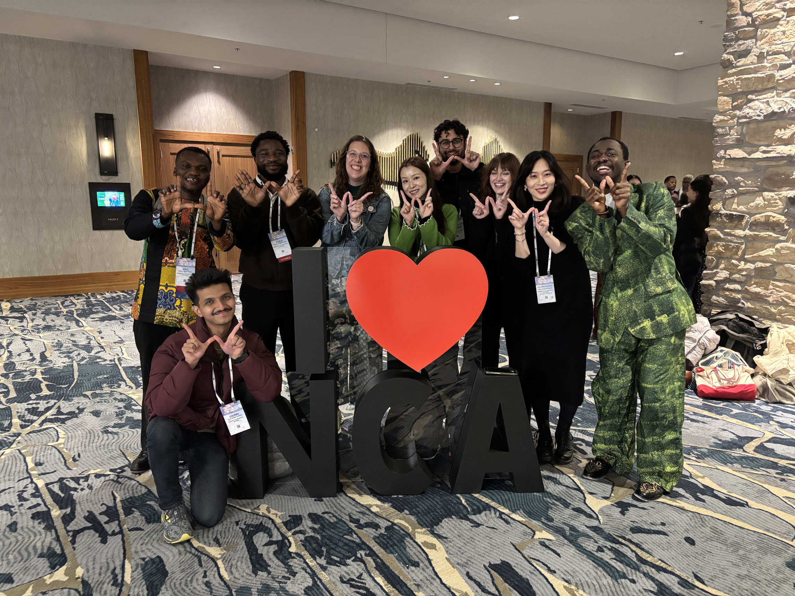
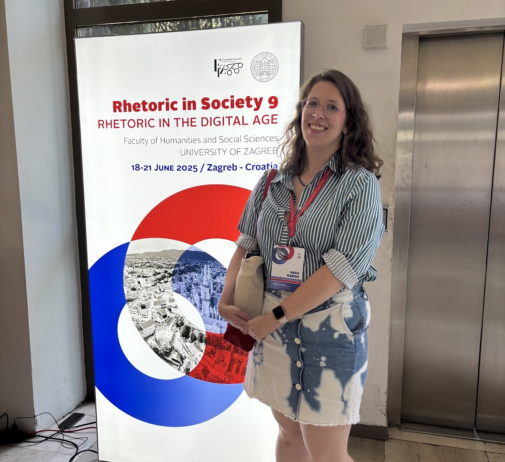
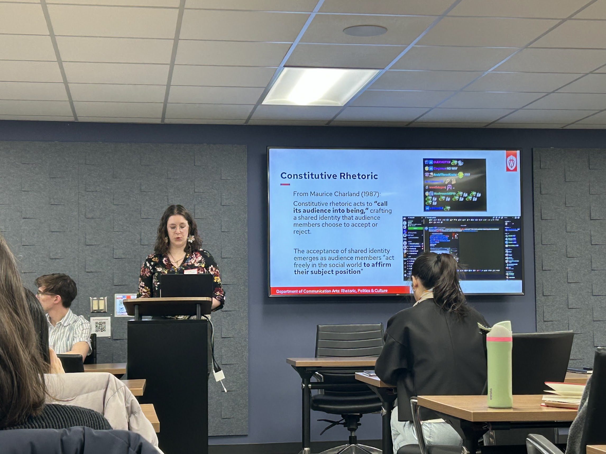

Research
Drawing on my experiences in computer science, I investigate the social construction of digital technologies through discursive practices across different social worlds. My work peers into the abstracted layers of digital and physical infrastructures that foreclose individual possibilities, constitute ontologies, and inform the broader societal integration of computational technologies. I ultimately aim to open the computational black box to empower everyday people as we navigate an ever changing technological landscape.
Topic Areas
Rhetoric of Technology, Digital Studies, Science and Technology Studies, Network Rhetoric, Argumentation and Debate
Current Projects
- How industry social worlds constitute generative AI technologies
- Rhetorical practices within data center debates in the US
- Global technoimaginaries surrounding genAI with Dr. Ailea Merriam-Pigg
- Project Assistant under Professor Jeffrey Church: Civics and Democracy Collective (I built the website!)
Publications
(under review) Rabon, Sara. “Technoliberalism on BeastMode: The MrBeast Persona and Content for the Attention Economy.”
(under review) Rabon, Sara. “User Habitus and The Social Dynamics of GenAI Chatbot Interfaces.”
Rabon, Sara. “Expectations Shape Reality: The Limits of Personification Metaphor on Generative Artificial Intelligence Development and Technological Closure.” The Midwest Quarterly 67, no. 2 (2026): 80-94.
Rabon, Sara. "The Art of Maximizing Attention: Digital Neoliberalism and MrBeast." AoIR Selected Papers of Internet Research. (2025)
Conference Presentations
“‘Ask Me Anything!’: How GenAI Chatbots Engage User Habitus.” National Communication Association. Human Communication and Technology Division. New Orleans, Lousiana. November 2026.
“At the Virtual Table with Luna Bright, Mochi Ming, and Tatanka Rising: Racist Personality Construction in Meta AI Studio Chatbots." National Communication Association. Critical and Cultural Studies Division. New Orleans, Lousiana. November 2026.
“Five Days At the “Epicenter of the Global AI Industry”: An Interdisciplinary Analysis of Discursive Practice in the Private Sector.” Association for Rhetoric of Science, Technology, and Medicine Pre-Conference, National Communication Association. New Orleans, Lousiana. November 2026.
“Position Map: the AI4 2026 Conference” AI’s Impact on the Creative World, Creative Futures Lab Conference
“‘It’s Our Water and Our Energy!’: Negotiating Opposing Discursive Realities within AI Data Center Debates in Rural Wisconsin.” Association for Rhetoric of Science, Technology, and Medicine Pre-Conference, Rhetoric Society of America. Portland, Oregon. May 2026
Parasociality and the Constituted Rhetorical Audience: Donald Trump on the Adin Ross Livestream.” National Communication Association. Public Address Division. Denver, Colorado. November 2025.
“The Art of Maximizing Attention: Digital Neoliberalism and MrBeast.” Association of Internet Researchers. Niterói, Rio de Janeiro, Brazil. October 2025.
“Trump in the Manosphere - How to Rhetorically Capture Young Men in the Digital Audience.” Rhetoric Society of Europe. Zagreb, Croatia. June 2025.






Public Scholarship
“Data Center Debates & Knowledge Production” Water & Data Center Workshop, Water@UW-Madison Madison, Wisconsin. September 2026.
“Algorithms, Attention, and Online Influence.” Cultivate Talk, May 2026.